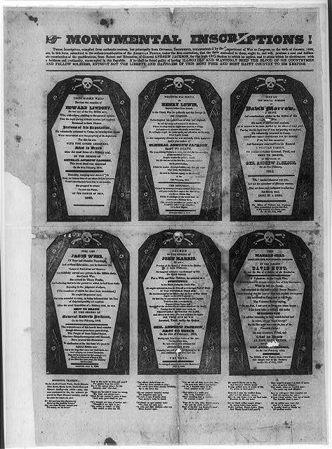

| Field | Detail |
| TOC Fit | Chapter 9 · Essay prompt 9.5 (Why Jackson Won in 1828) |
| Why Here | The first and most famous of the anti-Jackson “coffin handbills,” which used rows of black coffins to accuse Jackson of executing militiamen during the War of 1812. Students can read it as the Adams side’s attempt to turn Jackson’s military fame against him, and weigh it against evidence that it did little to slow his campaign. |
| Treatment | Public-domain image; letterpress text to be transcribed from the image |
In 1815 six Tennessee militiamen were executed at Mobile after a court-martial convicted them of mutiny and desertion; they had left their posts claiming their terms of service had ended. Jackson, as commanding general, approved the sentences. In 1828 John Binns, editor of the Philadelphia Democratic Press and a supporter of Adams, revived the episode in a broadside topped by six coffins, each labeled with a soldier’s name, followed by an account of the executions and of other violent acts charged to Jackson. The handbill was reprinted and imitated across the country, and “coffin handbills” became shorthand for the personal attacks of the 1828 campaign. Jacksonians answered with documents showing the men had been lawfully tried, and they turned the attacks into evidence that the administration had nothing better to offer than slander. The campaign over Jackson’s character, from both sides, crowded out discussion of policy. Editorial note. The image is the Library of Congress copy in the Rare Book and Special Collections Division (Broadside Collection, portfolio 229, no. 17), digitized from a black-and-white film copy negative; the Library states “No known restrictions on publication.” The Library’s catalog attributes the broadside to John Binns and gives the imprint as “[Philadelphia: John Binns], 1828.” The Norton Source Collection does not include this broadside. CAUTION: This is partisan attack literature; its account of the Mobile executions is one-sided and omits the court-martial record that Jackson’s defenders published. Text transcribed for this reader from the repository image; illegible words are marked [illegible]. Only the title and the large-type names on the coffins could be read from the Library’s online image; the small letterpress (the account of the executions) can be read on the Library of Congress’s high-resolution scan of the broadside. |
|
 |
|
UNIT 3 · AN EXPANDING NATION | HISTORY B17A | DANIEL GARZA, M.A.
|